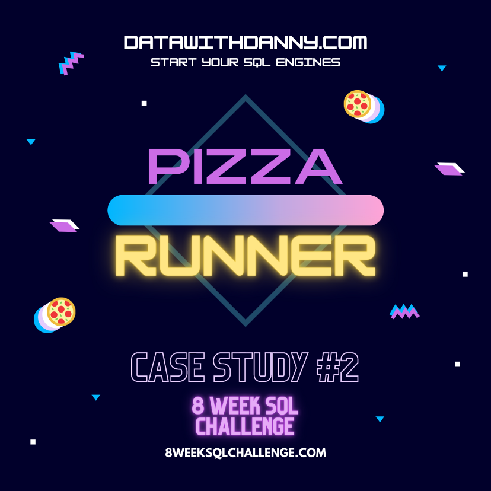

This is the Capstone Project for the Google Data Analytics Professional Certificate. The goal was
to analyze the differences
between customers with and without membership and undestand how to attract more customers to a
fictitious bike-share company
called Cyclistic. The data source was available in multiple CSV files with more than 9 million
records in total, so Python
was used to create a unique, complete, and cleaned dataset. A Tableau dashboard was then built
to extract useful insights.
For this project, a public kaggle dataset US Mass
Shootings was used. The data was cleaned and transformed with Python.
The it was imported to Tableau, where a descriptive dashboard was built showing
the mass shooting locations and statistics about them.

The goal of this project was to practice SQL. This is the first case study A of the series
#8weekschallenge created by Danny Ma.
This challenge is about a fictitious restaurant called Danny's Diner, where SQL was used to get
customer data insights.
Different functions were used, such as JOIN clauses, aggregate and window function, conditional
clause (WHERE),
and common table expression to extract information from multiple tables, and answer different
questions.

Continuing the #8weekschallenge. This
is the second challenge of the
series, which was separated in 3 parts. This challenge is related to a pizza business called
Pizza Runner. In this first part (Part A), the task was to clean
the ordering system data and get different insights from it. Along side with the SQL clauses and
functions used in the first challenge,
different SQL clauses were used, such as UPDATE SET and ALTER TABLE, to change data types and
update blank cells with NULL values. Also in this part,
some questions about pizza metrics were answered.
On the 2nd part of the challenge, some questions about the runners and customers experience (Part
B) and
about pizza ingredients optimisation (Part C).
On the 3rd and last part of the challenge, questions about pricing and rating (Part D) and a
bonus question were answered.
Data cleaning, manipulation, exploration, and analysis, and machine learning model prediction
using Python.
In this project, the goals were to explore an IBM employee dataset and to create a machine
learning model
to predict employees attrition. The dataset was read, cleaned and explored with the Python
libraries, Pandas, Numpy, and Matplotlib.
In the exploration phase, charts like histogram, stacked bar chart, pie chart, and bar chart
were built to get initial insights from
the data. Then, prior to the machine learninng (ML) model application, the dataset was
pre-processed with some feature engineering
techniques, such as encoding categorical features with dummy variables and scaling numerical
variables. Two classification models were
chosen for this project: Logistic Regression and Random Forest, and the models perfomances were
evaluated with the Confusion Matrix and
AUC-ROC Curve techniques.
The dataset used for this project was obtained at the
Data Resources Playground of Maven Analytics website. The dataset was already cleaned
and ready
to be analyzed, so it was directly imported to Tableau.
The dataset used for this project was created by Ian Klosowicz on his dashboard
contest.
The dataset was already cleaned, but I decided to include some columns to add a broader level of
detail to the analysis using MySQL. Then I created a Tableau dashboard.